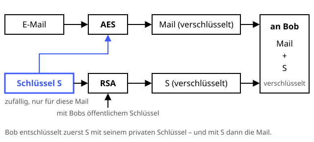

E-Mail-Verschlüsselung mit OpenPGP
Der versiegelte Brief im Zeitalter der Postkarte.
Definition
OpenPGP (z. B. mit GnuPG oder Thunderbird) kombiniert asymmetrische und symmetrische Verfahren: Die E-Mail wird mit einem zufälligen Sitzungsschlüssel per AES verschlüsselt, und dieser Sitzungsschlüssel mit dem öffentlichen Schlüssel des Empfängers. Zusätzlich signiert der Absender die Nachricht. So entsteht Ende-zu-Ende-Verschlüsselung – kein Mailserver kann mitlesen.
Zutaten
- Eigenes Schlüsselpaar und öffentlicher Schlüssel des Empfängers
- Zufälliger Sitzungsschlüssel (AES)
- Digitale Signatur
- Fingerabdruck-Vergleich über einen zweiten Kanal
Zubereitung
- Beide erzeugen ein Schlüsselpaar und tauschen die öffentlichen Schlüssel aus.
- Die Fingerabdrücke über einen zweiten Weg vergleichen – am Telefon oder persönlich.
- Der Absender signiert die Mail mit seinem privaten Schlüssel.
- Ein zufälliger Sitzungsschlüssel wird erzeugt und Mail samt Signatur damit verschlüsselt.
- Der Sitzungsschlüssel wird mit dem öffentlichen Schlüssel des Empfängers verschlüsselt und angehängt.
- Der Empfänger entschlüsselt mit seinem privaten Schlüssel erst den Sitzungsschlüssel, dann die Mail, und prüft die Signatur.
Skizze

Hybride Verschlüsselung: Das schnelle AES verschlüsselt die Mail, das langsame RSA nur den kurzen Schlüssel S. Die Signatur ist hier weggelassen.
Skizze erstellt von Claude (KI)
Demo
Platzhalter für die Demo
Tipps
- Betreff und Metadaten (Absender, Empfänger, Uhrzeit) werden bei klassischem OpenPGP nicht verschlüsselt.
- Den privaten Schlüssel mit einer starken Passphrase schützen und gleich ein Widerrufszertifikat anlegen.
- Alternative mit Zertifikaten statt Web of Trust: S/MIME.